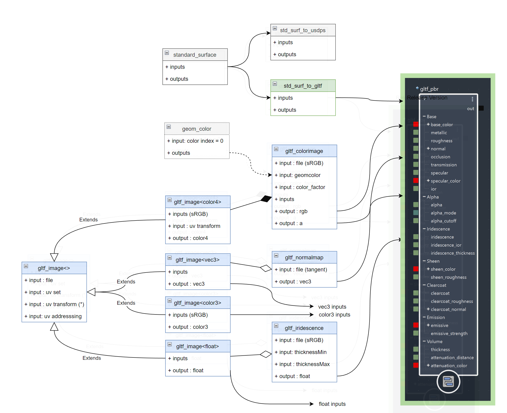
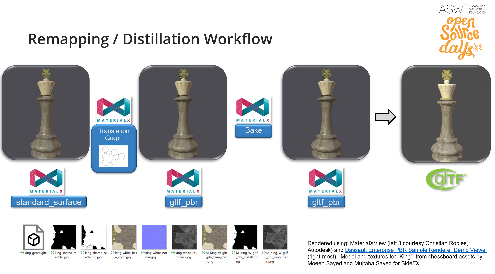
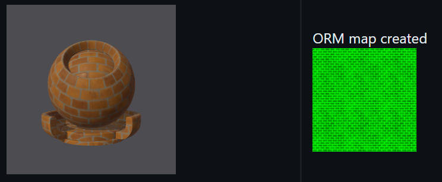

MaterialX and glTF
A presentation glTF bidirectional MaterialX data model conversion workflows can be found in the ASWF 2022 Open Source days presentation.
The diagram below is taken from that presentation to show the workflow. glTF content can be split up and the material descriptions converted to MaterialX. Conversely MaterialX can be converted to glTF materials which can then be bound to geometry.

The resulting library and utilities to support this has been added in this repo.
A Khronos branch using this library is available. This currently includes integration in the MaterialXViewer and MaterialX GraphEditor.

Figure: Snapshot of some sample assets imported into the MaterialX GraphEditor
Future: MaterialX Shader Graphs in glTF
The current workflow is a one-way conversion from glTF to MaterialX but is highly restrictive in that it only supports a subset of MaterialX nodes.
There is currently an initiative to define a MaterialX extension for glTF which would allow for a more general conversion by supporting embedding MaterialX pattern graphs inside of glTF.
This includes a proposal to support serialization of MaterialX to JSON format.
The JSON notebook presents one way to
extract out MaterialX pattern graphs and serialize to JSON. This ties in with the general MaterialX JSON
Serialization Proposal which is currently under discussion.
Some original notes can be found here with the initiative being presented during the
gltF: Transforming 3D Asset Deleivery for Real-Time Graphics presentation by the
Khronos Group at Siggraph 2023.
"Target" MaterialX Representation
There are two main targets for interop:
-
Shading Models:
MaterialX supports the glTF PBR surface shading model directly as of version 1.38.6, allowing for mostly a 1:1 mapping between glTF and MaterialX.
-
Pattern Graphs:
Supplementary nodes which match the glTF image
mapping logic are provided as part of the MaterialX standard library.
As MaterialX can represent an arbitrary shader graph it is not possible to map this completely to glTF which supports a fixed set of shaders and upstream pattern nodes (texture lookups)
Thus there is a specific MaterialX node graph configuration which is the recommended "target" for
distillation / export as well as remixing / import. These node graphs can be created in various editors
including Maya, Houdini, etc and USD HDStorm integrations in general
as long as the appropriate MaterialX library version is used.

Figure: Layout of "target" node graphs. Note that 0 or more upstream pattern graphs are
supported for inputs to the root PBR shader
The definitions for these nodes can be found as part of the core MaterialX library definitions
Colorspaces and Real World Units
For a primer on glTF, USD and MaterialX differences Eric Haines presentation here is a useful reference.
Extrapolating from this, as part of distillation / export it is possible to to a certain extent to pre-convert units and colorspaces to match the glTF fixed colorspace and unit conventions.
If in the future real world units are supported in glTF then the appropriate semantic unit tagging can be
added to
the existing inputs are additional attributes. Input values are not considered to be mappable and hence if a
unit semantic is provided import / export can handle this via either a 3rd-party or built in scale unit
conversion utility.
Colorspace conversion is currently handled via the texture "baking" utilities available in MaterialX. Other 3rd-party utilities could be used as well.
Remixing / Import: glTF to MaterialX
For conversion from glTF to MaterialX, the following nodes can be used to provide a 1:1 mapping:
<gltf_image>
This node provides an interface which matches how image lookup are performed within glTF 2.0 based on this spec
Details
The following differences need to be accounted for:
- The transform pivot is 0,0 for MaterialX but 0,1 for glTF.
- Offset is thus negated in V
- Rotation is specified as radians versus angles and is reverse direction. (negation required)
- Scale is inverted between MaterialX and glTF
- The default transformation order is TRS for glTF and not SRT. This option is set correctly on this node.
This is supported for all variants of this node: vector3, float, color3, and color4. No vector2 variant is required at this time.
- One texture coordinate set referenced by set name, with the default set being "UV0" which is
equal to set 0.
- Names are used to support OpenUSD workflows where al sets are named.
- A
<texcoord>node which a different index can be connected to provide index based workflows as found for glTF.
- U and V address modes and filter type are accessible with the defaults for glTF and MaterialX matching.
The color4 output is split into color3 and alpha outputs which can be directly mapped to a
gltf_pbr node.
<gltf_colorimage>
Node for handling input of color images. Inherits properties from <gltf_image>
Details
This encapsulates color/alpha management where an color4 image lookup can be modulated by a color4 factor as well as geometric color4. That is final color is (base on this post):
color4_image * color4_factor * geometry_color4
The input image can have a "colorspace" semantic specified. By default for import/export this
should be srgb_texture but is not hard-coded as part of the definition. Color factor is set
to be uniform and both it and geometry color are assumed to be specified in the rendering / target
colorspace.
As not all geometry have geometric colors , the default "geometry color" input is a uniform
value = { 1,1,1,1 }
which can be mapped to a <geomcolor> node as required. That node allows for color set
index to be set with the
default being set 0.Compliant texture transform support is provided by using a gltf_image
node as part of it's definition.
<gtlf_normalmap>
Node for handling input of tangent space normal map images. Inherits properties from
<gltf_image>
Details
This node encapsulates a file texture which is a normal map. It uses <gltf_vector3>
and <normalmap> as it's main components to provide base level glTF support which always
outputs a normal map. normalmap space is not an exposed interface and is always set to tangent space, with
a default / fallback value of { 0.5, 0.5, 1.0 } if no input image is specified.
Compliant texture transform support is provided by using a <gltf_image> node as part of it's definition.
<gltf_iridescence_thickness>
Node for handling "thickness" images. Inherits properties from <gltf_image>
Details
This node handles user input for a "thickness" image which is mapped to a thickness "min" and "max" to scale the images output (g channel) as defined here. This produces a float thickness output which can be connected to gttf_pbr "iridescence ior".
Compliant glTF texture transform support is provided by using a <gltf_image> in it's implementation.
Distillation / Export : MaterialX to glTF
The reverse process which is the more natural one requires
distilling a MaterialX shading graph down to a glTF one.
Below is a diagram of the distillation process taken from the ASWF 2022 Open Source days
presentation.

If users use only the MaterialX nodes supported which correspond to glTF then this mapping is more
straight-forward. If not then a baking step is required to convert all upstream connected
graphs into a single
image, and if a non-glTF shading model is used then shader translation is required.
Below is an example of the Brick example shader which uses the
Autodesk standard surface which is mapped to a glTF PBR surface material and the result of
baking a ORM map (along with other maps).

Fortunately, translation and baking are provided as part of the code API. What is not currently handled
however is merging of multiple images into single images such as for ORM images used by glTF
shaders. This would be a useful utility, and could be done as a MaterialX shader graph.